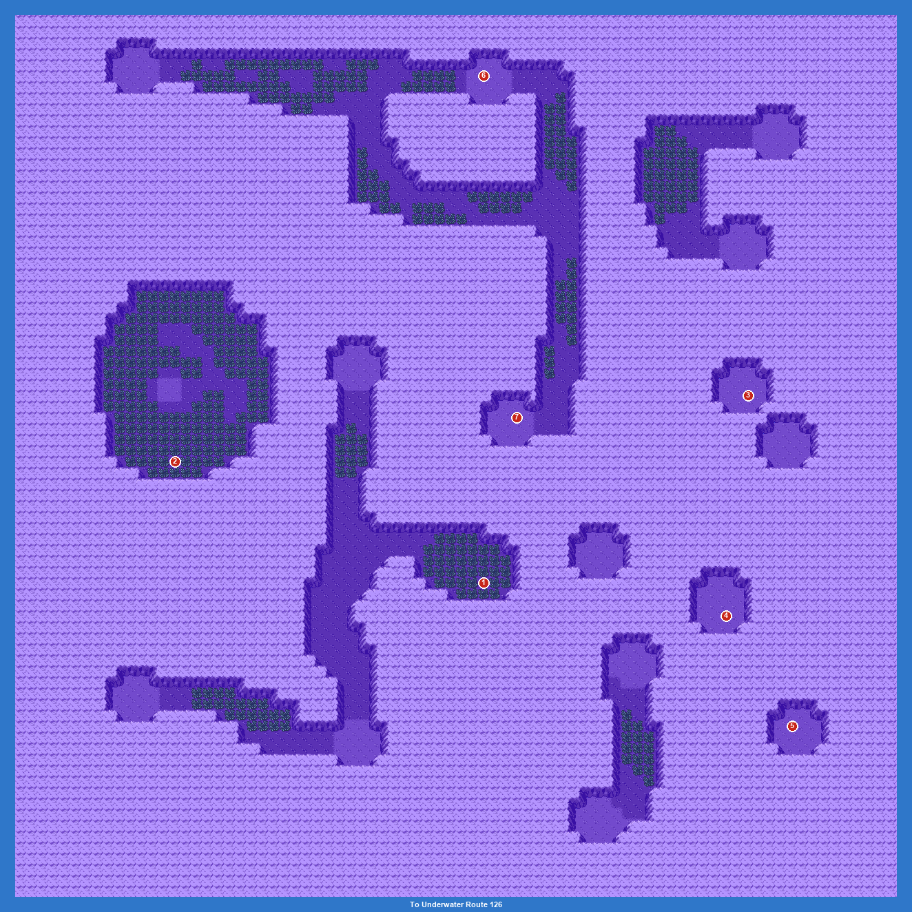

PokémonEMMA'S EMERALD
OFFICIAL Strategy Guide
Underwater Route 124
TIP
No wild Pokémon in the grass here. Encounter tables change with the time of day: M = morning (6–10), D = day (10–19), E = evening (19–20), N = night (20–6).
Items
| 1Carbos (hidden) |
| 2Green Shard (hidden) |
| 3Pearl (hidden) |
| 4Big Pearl (hidden) |
| 5Heart Scale (hidden) |
| 6Calcium (hidden) |
| 7Heart Scale (hidden) |
Catch ’Em All! Surfing
 | Clamperl: | LV20–30 | Common | MDEN |
 | Cramorant: | LV21–22 | Common | MDEN |
 | Alomomola: | LV27 | Common | MDEN |
 | Qwilfish: | LV27–29 | Common | MDEN |
 | Bruxish: | LV24–26 | Common | MDEN |
 | Remoraid: | LV34 | Uncommon | MDEN |
 | Binacle: | LV26–27 | Uncommon | MDEN |
 | Frogadier: | LV32–33 | Uncommon | MDEN |
 | Finizen: | LV28–30 | Uncommon | MDEN |
 | Wingull: | LV31–33 | Rare | MDEN |
 | Basculin (Red Striped): | LV31–33 | Rare | MDEN |
 | Brionne: | LV28–30 | Rare | MDEN |
 | Wartortle: | LV29 | Rare | MDEN |
 | Goldeen: | LV32–34 | Rare | MDEN |
 | Krabby: | LV30 | Rare | MDEN |
 | Chewtle: | LV33 | Rare | MDEN |
 | Wishiwashi (Solo): | LV33–35 | Rare | MDEN |
25